01. eval_pallet07:1778652140531310080
PF:R · RAW:R · N3+Sub:R · BI:R
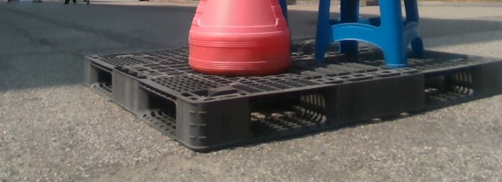
| 방법 | 위치 오차 | 회전 오차 |
|---|---|---|
| PoseFix | 8.05cm | 86.12° |
| RAW YOLO | 7.48cm | 86.46° |
| N3→SubPix | 7.18cm | 86.03° |
| 최소 B/I | 13.65cm | 88.90° |
| 기존 전체 방법 e | 4.22cm | 0.76° |
전체 프레임 보기
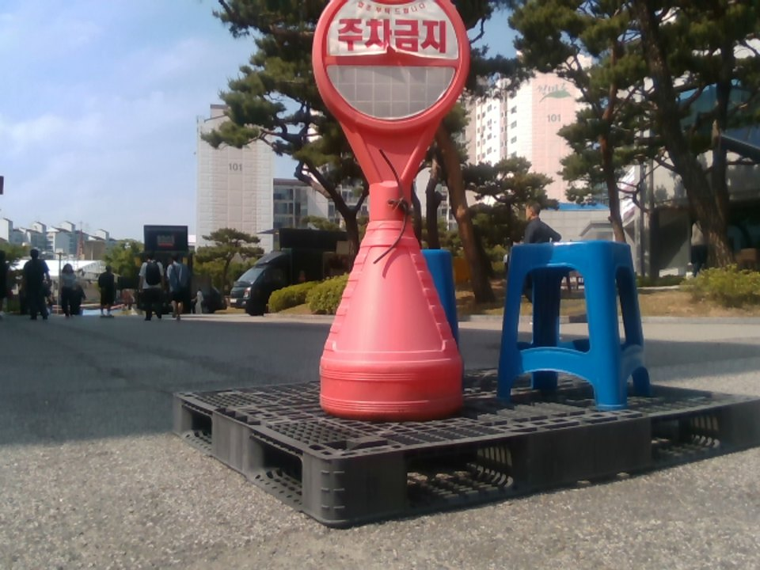
전체192장 중 ALL5 공통 IQR 기준으로 제외된71장 전부입니다. 어느 경로에서든 위치18.728cm 또는 회전7.222°를 넘으면 공통 제외했습니다. 빨간 값이 실제 제외 원인입니다. 사진은 원 RGB의 표시용 JPEG이며 GT/예측 pose를 그리지 않았습니다. 작은 사진은 예측 bbox 주변 확대이고, 클릭하거나 펼치면 전체 프레임을 볼 수 있습니다. 원래 전체192장 평가·실패는 그대로 보존했습니다.
PF:R · RAW:R · N3+Sub:R · BI:R

| 방법 | 위치 오차 | 회전 오차 |
|---|---|---|
| PoseFix | 8.05cm | 86.12° |
| RAW YOLO | 7.48cm | 86.46° |
| N3→SubPix | 7.18cm | 86.03° |
| 최소 B/I | 13.65cm | 88.90° |
| 기존 전체 방법 e | 4.22cm | 0.76° |

PF:R · RAW:R · N3+Sub:R · BI:R
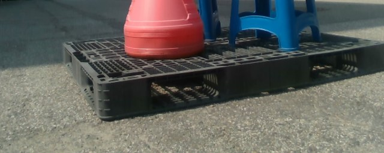
| 방법 | 위치 오차 | 회전 오차 |
|---|---|---|
| PoseFix | 12.04cm | 87.95° |
| RAW YOLO | 13.55cm | 87.89° |
| N3→SubPix | 13.20cm | 88.16° |
| 최소 B/I | 12.05cm | 89.02° |
| 기존 전체 방법 e | 4.34cm | 0.85° |
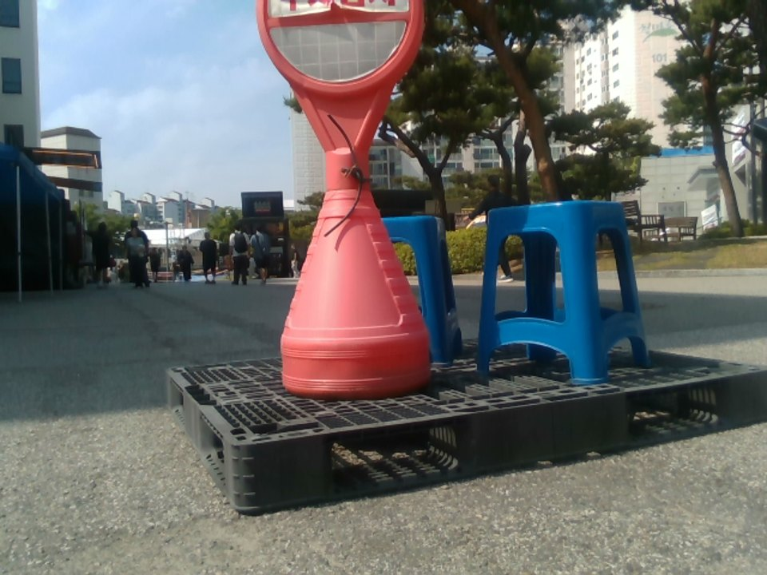
PF:R · RAW:R · N3+Sub:TR · BI:TR
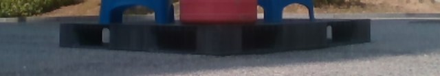
| 방법 | 위치 오차 | 회전 오차 |
|---|---|---|
| PoseFix | 5.07cm | 77.67° |
| RAW YOLO | 15.10cm | 77.02° |
| N3→SubPix | 19.96cm | 77.20° |
| 최소 B/I | 58.44cm | 55.92° |
| 기존 전체 방법 e | 2.45cm | 3.46° |
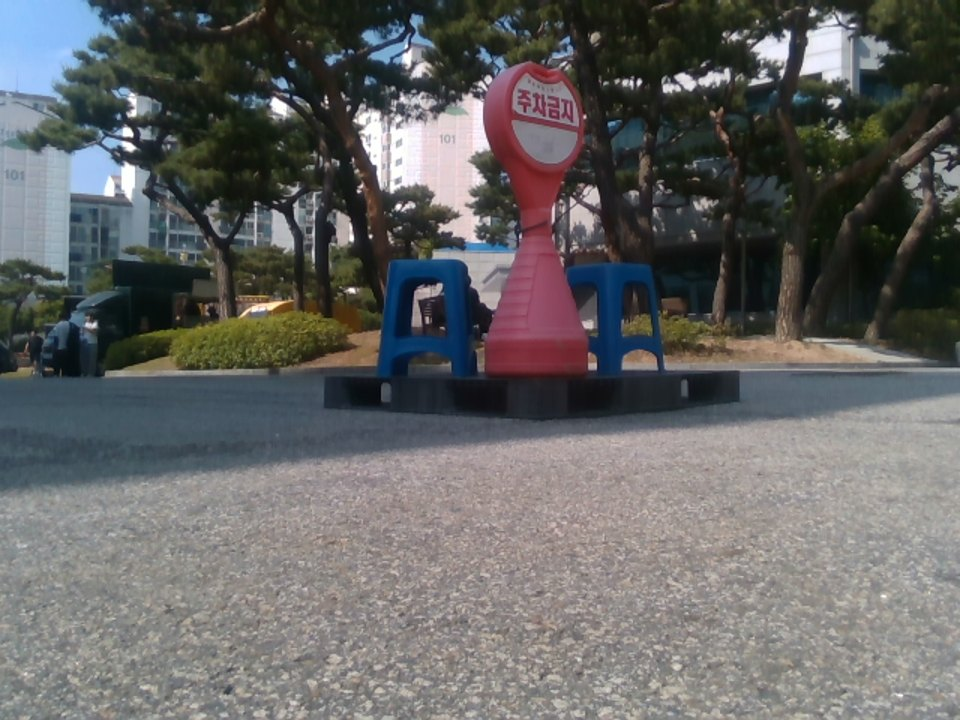
BI:R
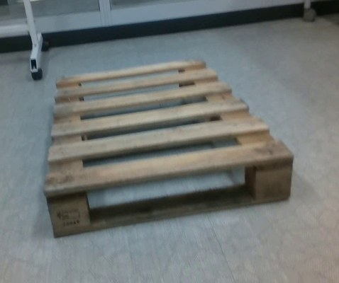
| 방법 | 위치 오차 | 회전 오차 |
|---|---|---|
| PoseFix | 0.85cm | 0.55° |
| RAW YOLO | 0.61cm | 1.36° |
| N3→SubPix | 0.74cm | 1.00° |
| 최소 B/I | 5.79cm | 8.30° |
| 기존 전체 방법 e | 0.43cm | 0.33° |
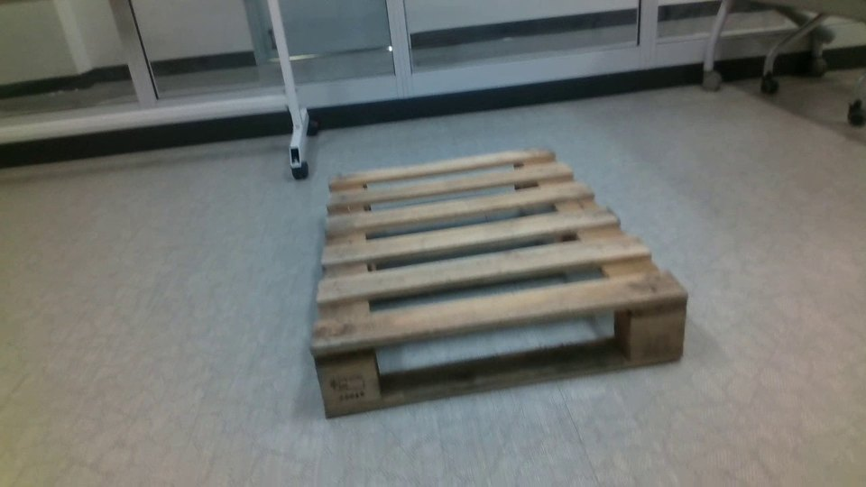
BI:R
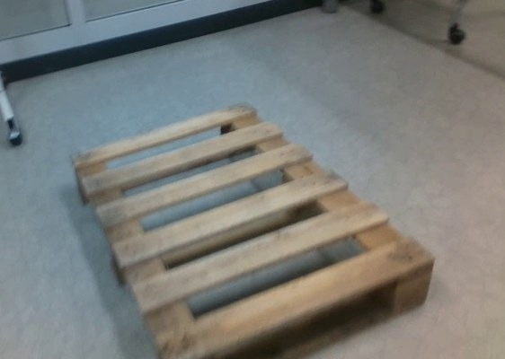
| 방법 | 위치 오차 | 회전 오차 |
|---|---|---|
| PoseFix | 3.97cm | 4.22° |
| RAW YOLO | 3.14cm | 4.66° |
| N3→SubPix | 2.77cm | 4.02° |
| 최소 B/I | 9.42cm | 102.05° |
| 기존 전체 방법 e | 2.31cm | 1.90° |
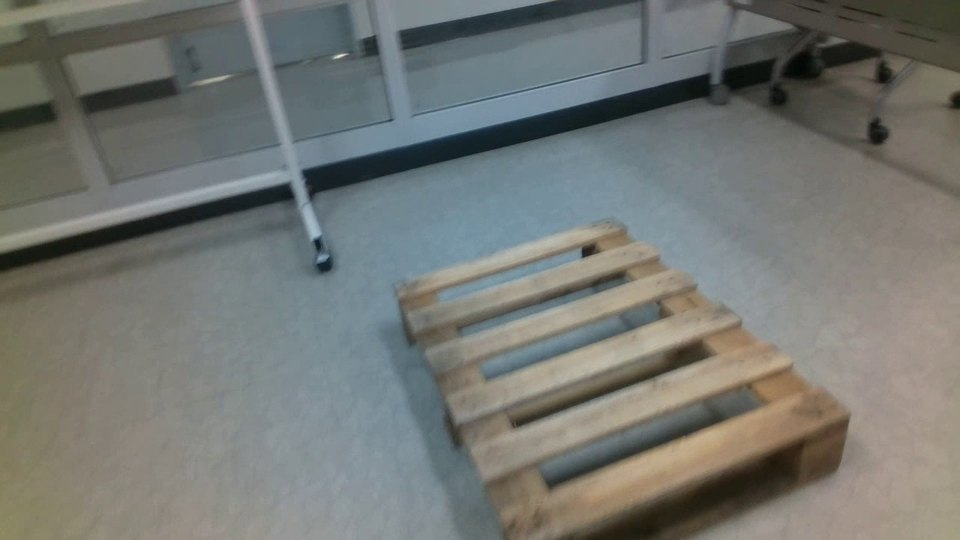
PF:TR · RAW:R
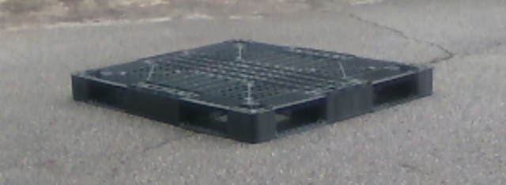
| 방법 | 위치 오차 | 회전 오차 |
|---|---|---|
| PoseFix | 21.54cm | 81.69° |
| RAW YOLO | 16.93cm | 81.94° |
| N3→SubPix | 5.10cm | 1.22° |
| 최소 B/I | 4.88cm | 1.05° |
| 기존 전체 방법 e | 5.34cm | 0.96° |
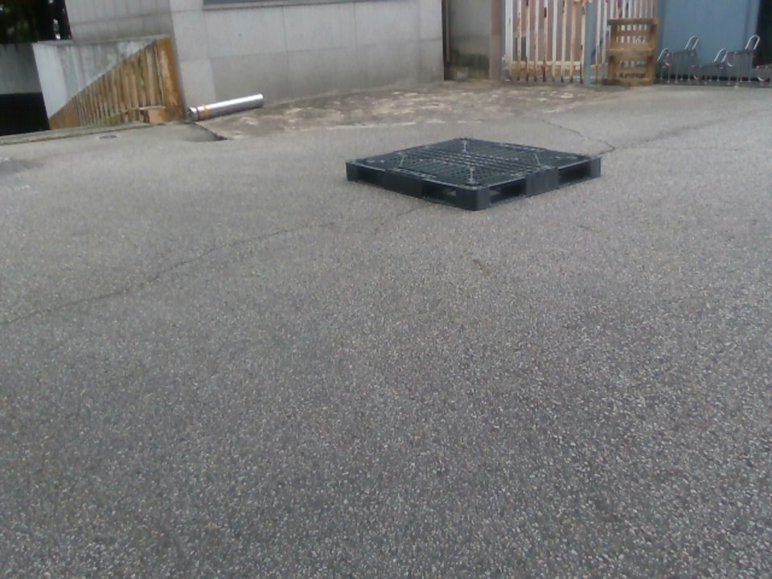
PF:TR · RAW:TR
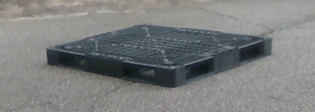
| 방법 | 위치 오차 | 회전 오차 |
|---|---|---|
| PoseFix | 32.86cm | 82.08° |
| RAW YOLO | 28.39cm | 81.58° |
| N3→SubPix | 2.02cm | 1.46° |
| 최소 B/I | 1.64cm | 0.86° |
| 기존 전체 방법 e | 2.17cm | 0.76° |
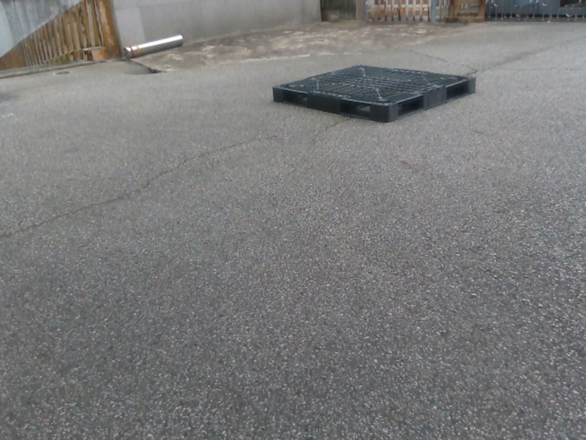
RAW:TR
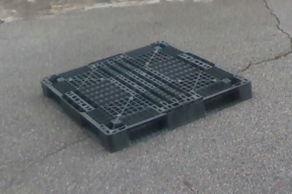
| 방법 | 위치 오차 | 회전 오차 |
|---|---|---|
| PoseFix | 13.89cm | 0.59° |
| RAW YOLO | 29.77cm | 83.63° |
| N3→SubPix | 1.98cm | 1.28° |
| 최소 B/I | 1.72cm | 1.38° |
| 기존 전체 방법 e | 2.74cm | 1.30° |
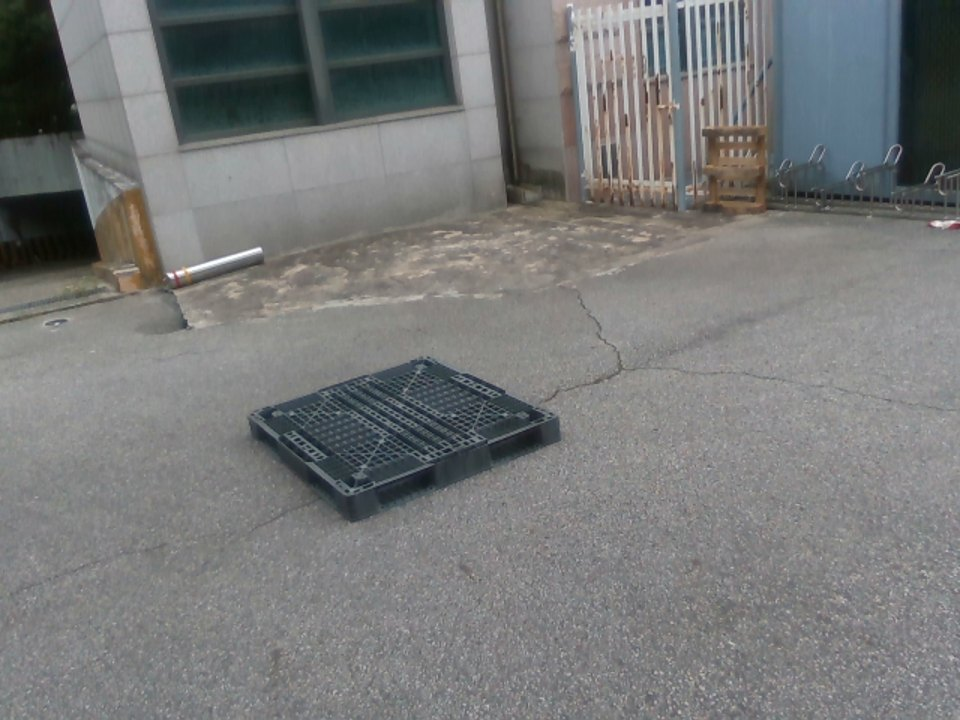
PF:R · RAW:R · N3+Sub:R · BI:R
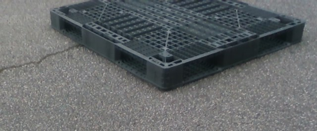
| 방법 | 위치 오차 | 회전 오차 |
|---|---|---|
| PoseFix | 9.81cm | 83.74° |
| RAW YOLO | 9.28cm | 83.77° |
| N3→SubPix | 6.24cm | 83.15° |
| 최소 B/I | 6.82cm | 84.00° |
| 기존 전체 방법 e | 0.76cm | 0.25° |
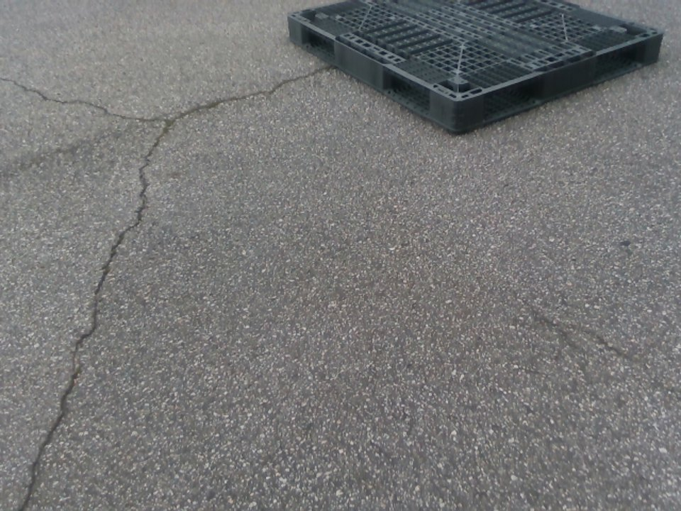
e:TR
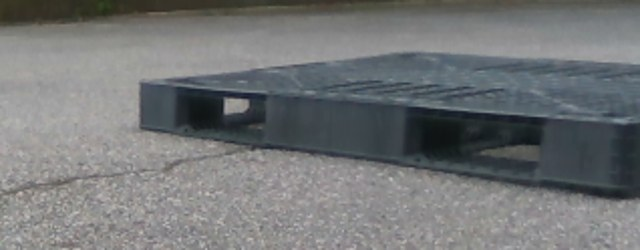
| 방법 | 위치 오차 | 회전 오차 |
|---|---|---|
| PoseFix | 6.73cm | 1.37° |
| RAW YOLO | 12.40cm | 1.45° |
| N3→SubPix | 5.43cm | 0.85° |
| 최소 B/I | 6.44cm | 0.75° |
| 기존 전체 방법 e | 31.28cm | 74.49° |
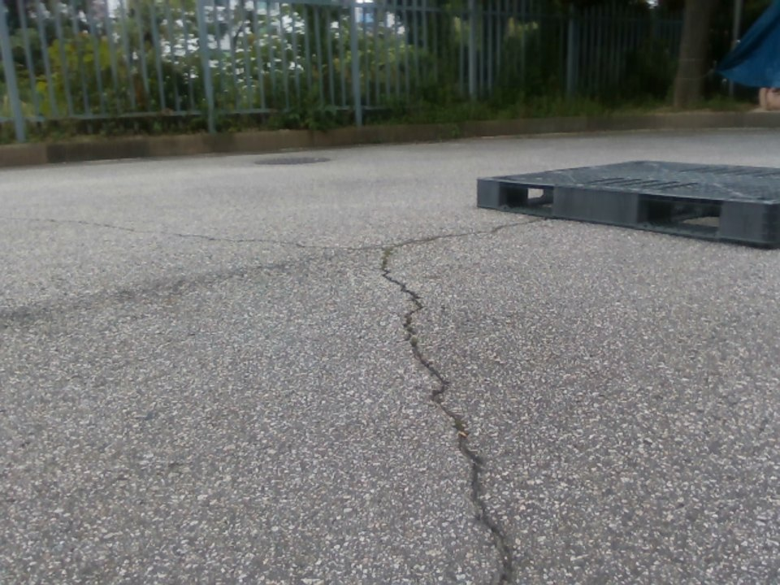
e:TR
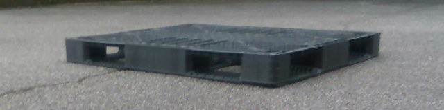
| 방법 | 위치 오차 | 회전 오차 |
|---|---|---|
| PoseFix | 11.90cm | 1.19° |
| RAW YOLO | 11.97cm | 0.91° |
| N3→SubPix | 8.50cm | 1.04° |
| 최소 B/I | 5.47cm | 0.89° |
| 기존 전체 방법 e | 22.51cm | 84.61° |
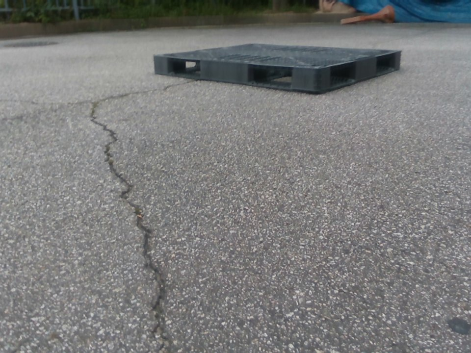
e:TR
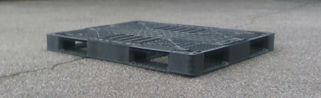
| 방법 | 위치 오차 | 회전 오차 |
|---|---|---|
| PoseFix | 9.20cm | 0.48° |
| RAW YOLO | 9.18cm | 0.28° |
| N3→SubPix | 6.71cm | 0.51° |
| 최소 B/I | 4.30cm | 0.67° |
| 기존 전체 방법 e | 19.87cm | 84.58° |
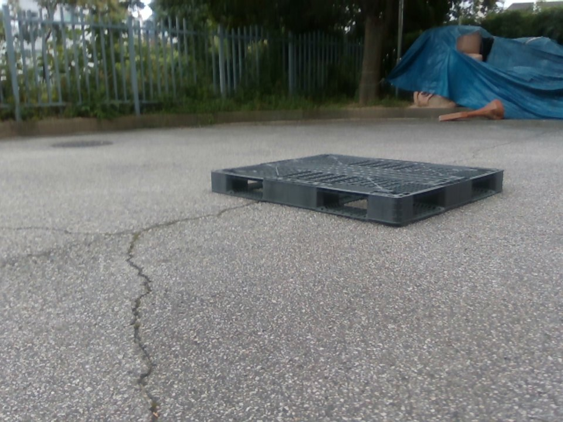
RAW:T
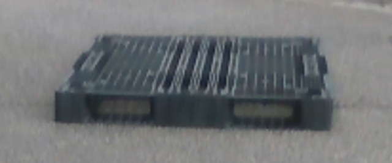
| 방법 | 위치 오차 | 회전 오차 |
|---|---|---|
| PoseFix | 17.42cm | 1.18° |
| RAW YOLO | 21.57cm | 1.37° |
| N3→SubPix | 6.75cm | 1.08° |
| 최소 B/I | 6.77cm | 0.80° |
| 기존 전체 방법 e | 7.28cm | 0.59° |
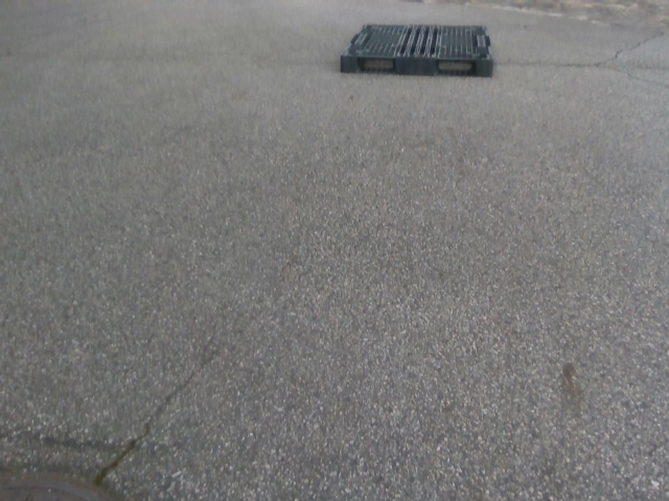
RAW:T
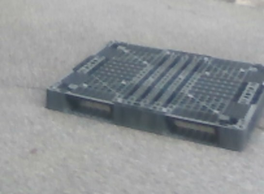
| 방법 | 위치 오차 | 회전 오차 |
|---|---|---|
| PoseFix | 16.67cm | 0.96° |
| RAW YOLO | 21.80cm | 1.18° |
| N3→SubPix | 15.25cm | 1.12° |
| 최소 B/I | 10.22cm | 0.92° |
| 기존 전체 방법 e | 1.07cm | 0.60° |
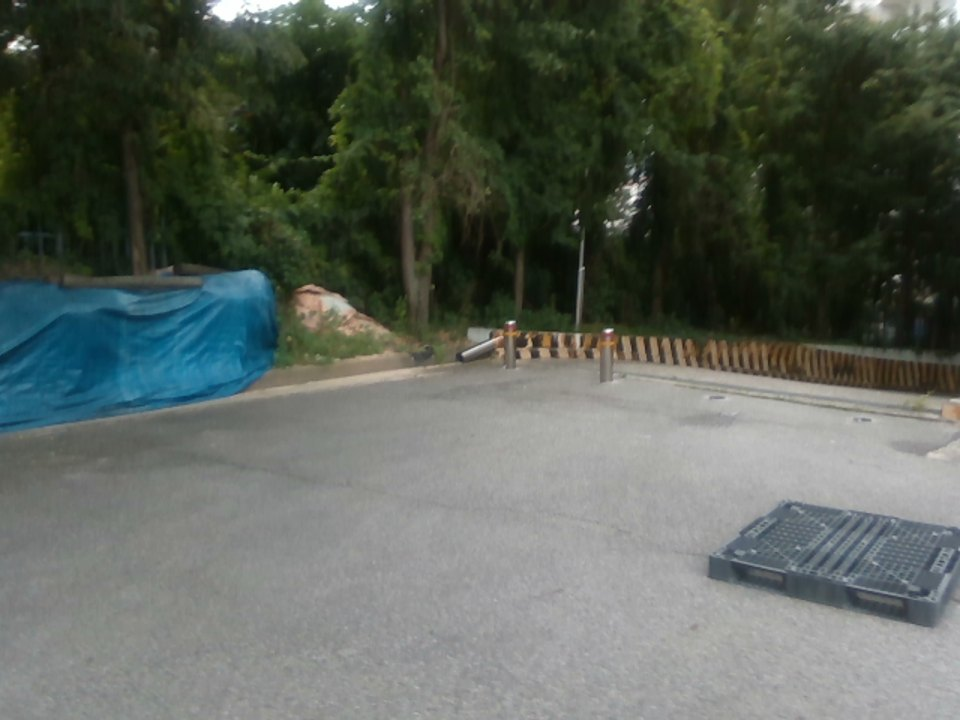
RAW:TR
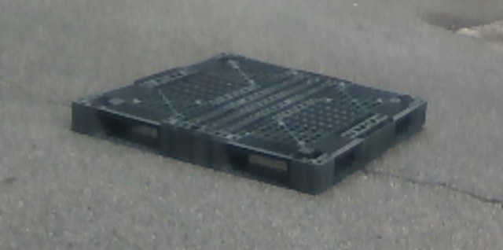
| 방법 | 위치 오차 | 회전 오차 |
|---|---|---|
| PoseFix | 14.79cm | 0.81° |
| RAW YOLO | 23.56cm | 83.09° |
| N3→SubPix | 0.85cm | 0.61° |
| 최소 B/I | 1.73cm | 0.33° |
| 기존 전체 방법 e | 2.24cm | 0.30° |
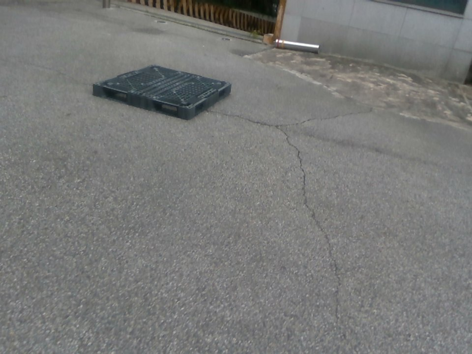
PF:T · RAW:TR · N3+Sub:TR · BI:TR · e:TR
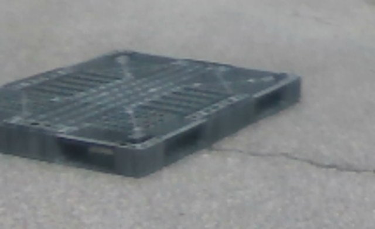
| 방법 | 위치 오차 | 회전 오차 |
|---|---|---|
| PoseFix | 37.13cm | 1.76° |
| RAW YOLO | 33.20cm | 82.09° |
| N3→SubPix | 25.55cm | 82.01° |
| 최소 B/I | 68.94cm | 81.57° |
| 기존 전체 방법 e | 44.05cm | 81.45° |
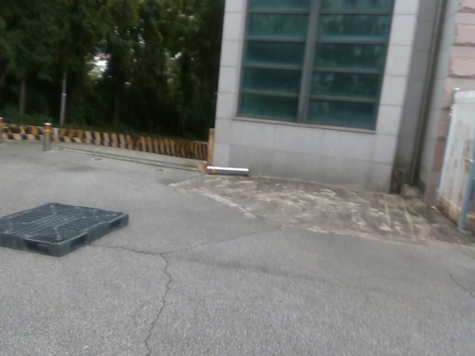
PF:T · RAW:T
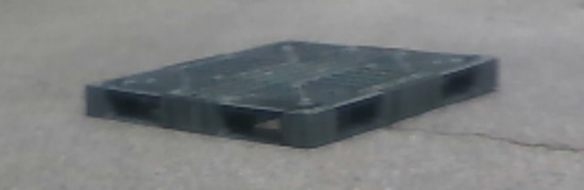
| 방법 | 위치 오차 | 회전 오차 |
|---|---|---|
| PoseFix | 20.96cm | 1.02° |
| RAW YOLO | 22.55cm | 1.06° |
| N3→SubPix | 6.84cm | 1.46° |
| 최소 B/I | 6.55cm | 1.53° |
| 기존 전체 방법 e | 6.83cm | 1.54° |
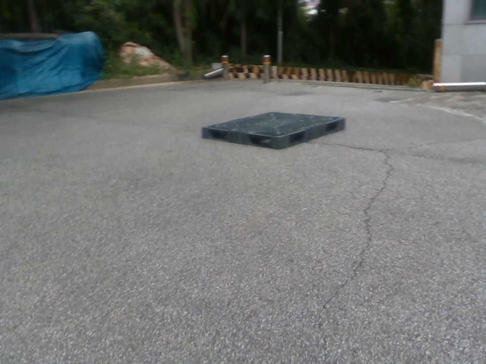
RAW:T
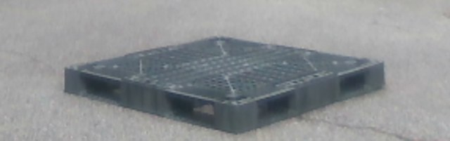
| 방법 | 위치 오차 | 회전 오차 |
|---|---|---|
| PoseFix | 17.34cm | 0.90° |
| RAW YOLO | 20.05cm | 0.58° |
| N3→SubPix | 5.31cm | 0.19° |
| 최소 B/I | 5.63cm | 0.50° |
| 기존 전체 방법 e | 6.07cm | 0.66° |
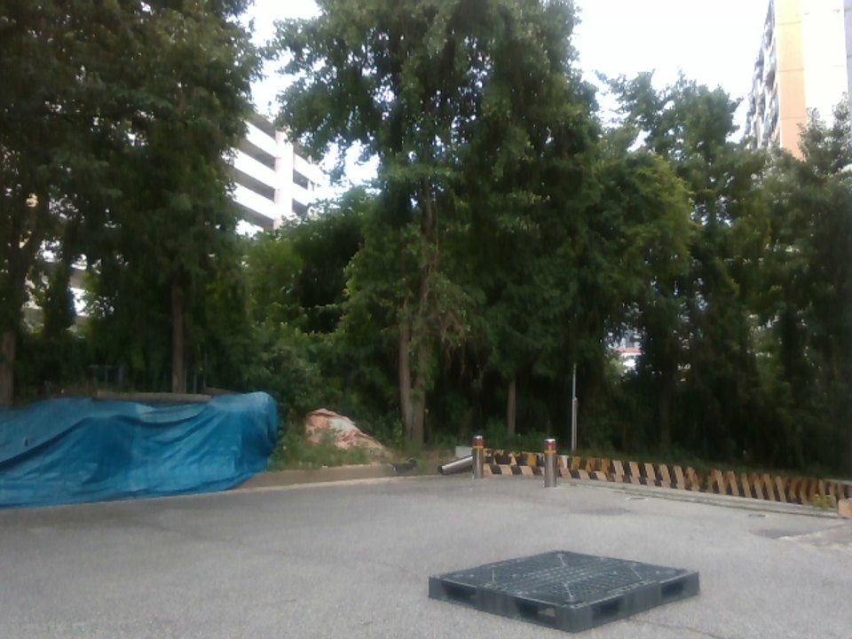
PF:R · RAW:TR · BI:R · e:R
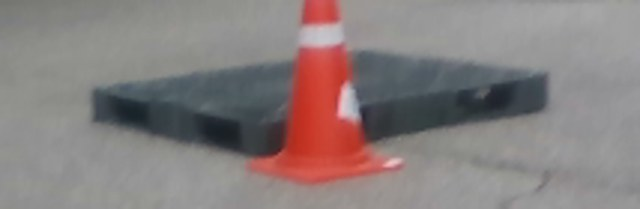
| 방법 | 위치 오차 | 회전 오차 |
|---|---|---|
| PoseFix | 18.47cm | 81.97° |
| RAW YOLO | 24.81cm | 82.74° |
| N3→SubPix | 5.06cm | 0.98° |
| 최소 B/I | 11.49cm | 37.57° |
| 기존 전체 방법 e | 12.84cm | 7.81° |
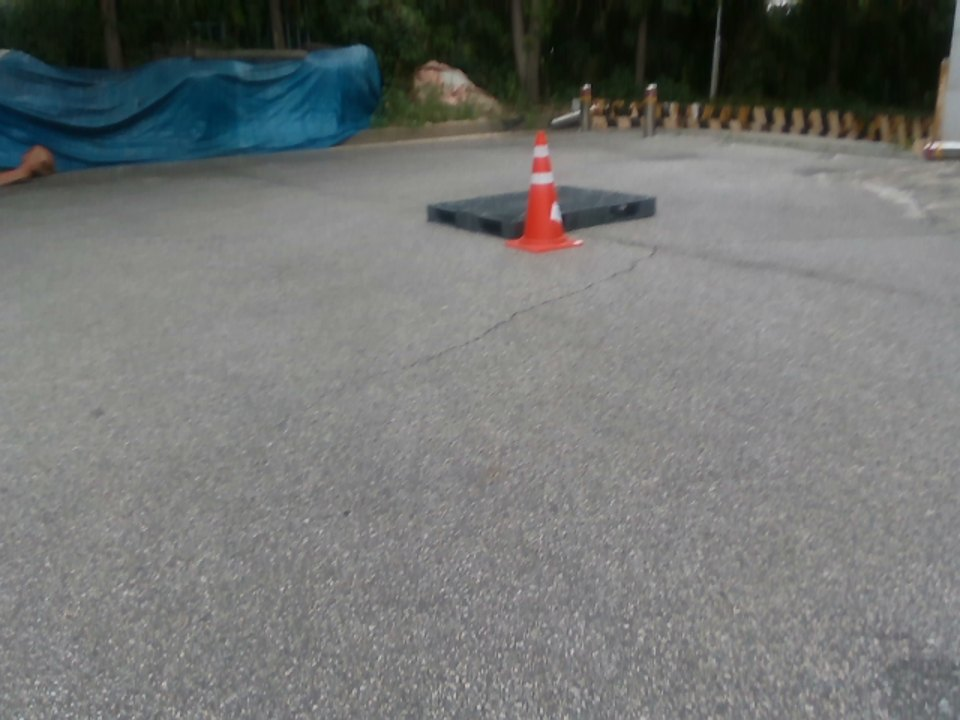
PF:R · RAW:TR · N3+Sub:TR · BI:TR · e:TR
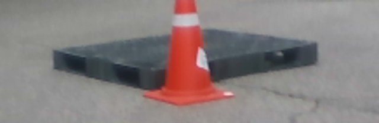
| 방법 | 위치 오차 | 회전 오차 |
|---|---|---|
| PoseFix | 13.72cm | 74.21° |
| RAW YOLO | 30.98cm | 74.22° |
| N3→SubPix | 25.07cm | 74.43° |
| 최소 B/I | 27.69cm | 58.87° |
| 기존 전체 방법 e | 20.66cm | 12.68° |
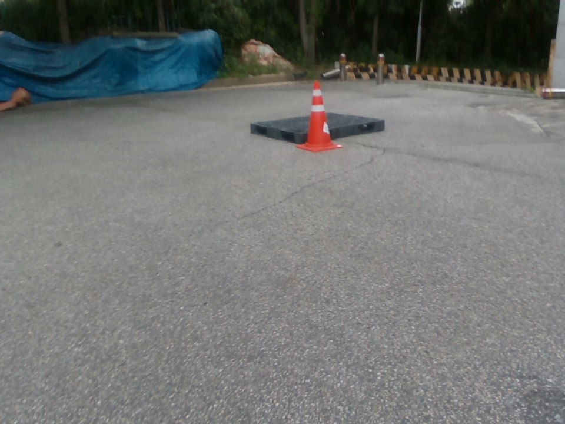
PF:T · RAW:T · BI:TR · e:R
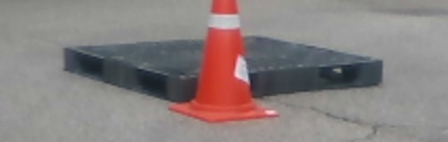
| 방법 | 위치 오차 | 회전 오차 |
|---|---|---|
| PoseFix | 23.90cm | 1.50° |
| RAW YOLO | 25.80cm | 2.57° |
| N3→SubPix | 11.25cm | 2.20° |
| 최소 B/I | 51.01cm | 12.68° |
| 기존 전체 방법 e | 9.73cm | 8.53° |
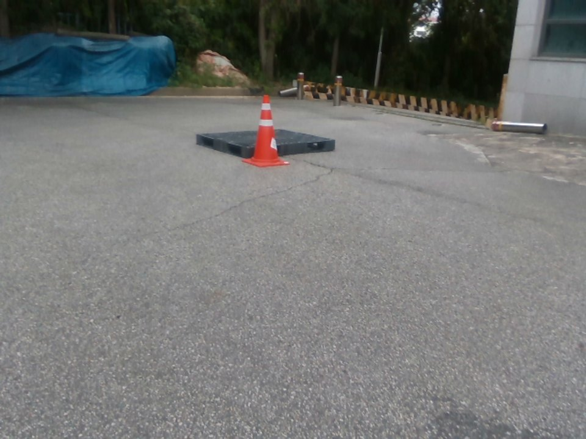
RAW:T
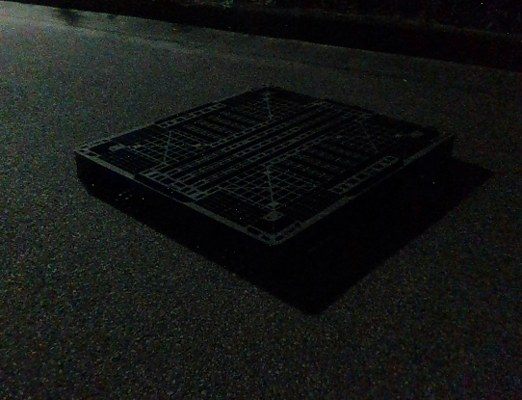
| 방법 | 위치 오차 | 회전 오차 |
|---|---|---|
| PoseFix | 17.79cm | 4.71° |
| RAW YOLO | 18.98cm | 4.90° |
| N3→SubPix | 14.38cm | 5.46° |
| 최소 B/I | 14.38cm | 5.46° |
| 기존 전체 방법 e | 13.27cm | 6.05° |
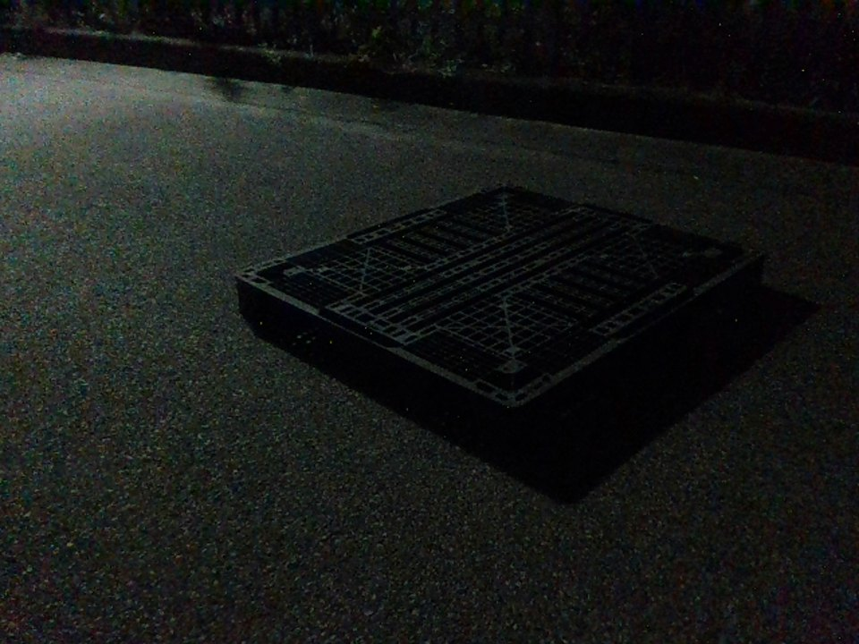
e:TR
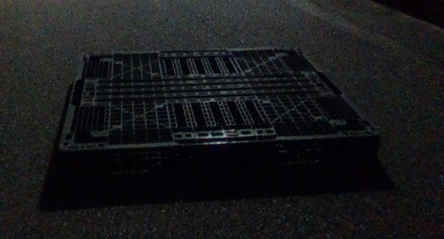
| 방법 | 위치 오차 | 회전 오차 |
|---|---|---|
| PoseFix | 3.47cm | 1.49° |
| RAW YOLO | 3.78cm | 1.80° |
| N3→SubPix | 3.06cm | 2.23° |
| 최소 B/I | 2.16cm | 2.09° |
| 기존 전체 방법 e | 29.77cm | 83.82° |
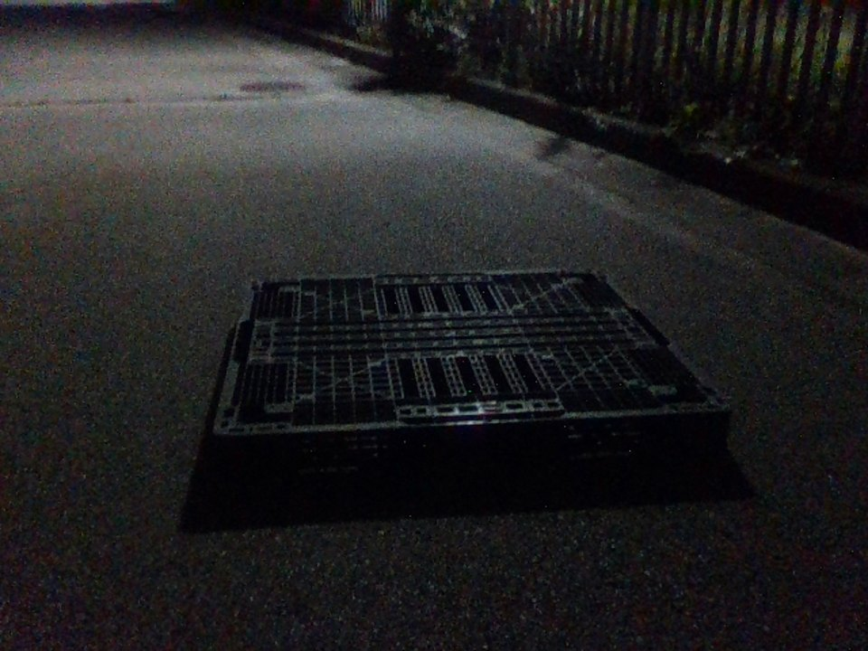
RAW:T · e:T
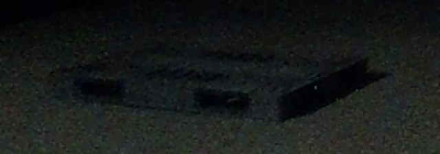
| 방법 | 위치 오차 | 회전 오차 |
|---|---|---|
| PoseFix | 11.23cm | 3.54° |
| RAW YOLO | 19.38cm | 3.44° |
| N3→SubPix | 14.50cm | 3.70° |
| 최소 B/I | 14.04cm | 3.89° |
| 기존 전체 방법 e | 28.37cm | 4.48° |
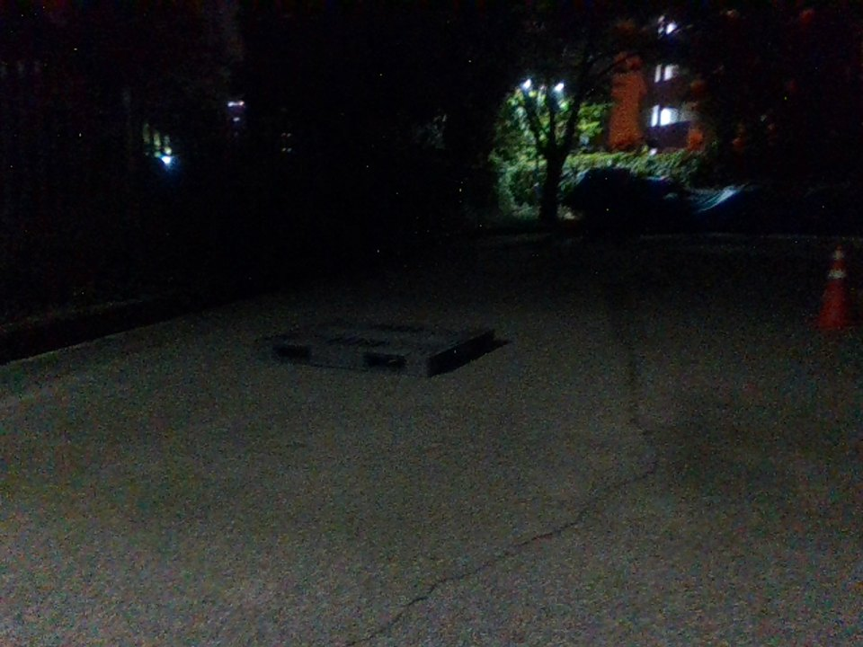
e:R
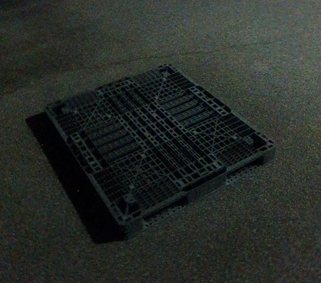
| 방법 | 위치 오차 | 회전 오차 |
|---|---|---|
| PoseFix | 2.47cm | 0.40° |
| RAW YOLO | 1.87cm | 0.47° |
| N3→SubPix | 2.26cm | 0.94° |
| 최소 B/I | 2.36cm | 1.33° |
| 기존 전체 방법 e | 10.69cm | 82.40° |
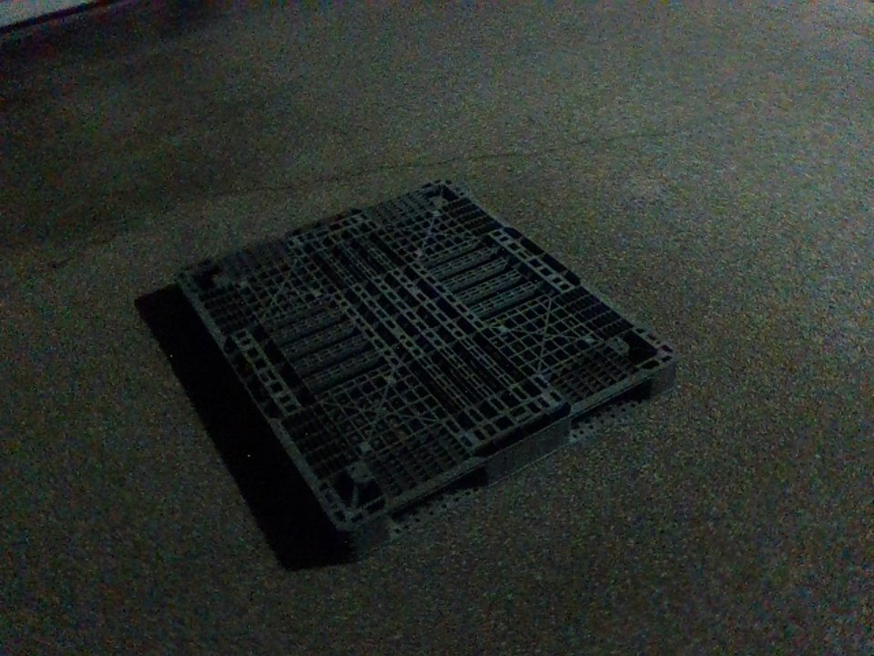
e:T
| 방법 | 위치 오차 | 회전 오차 |
|---|---|---|
| PoseFix | 10.71cm | 6.01° |
| RAW YOLO | 12.63cm | 6.29° |
| N3→SubPix | 11.19cm | 5.20° |
| 최소 B/I | 14.24cm | 5.54° |
| 기존 전체 방법 e | 30.66cm | 3.42° |
RAW:T
| 방법 | 위치 오차 | 회전 오차 |
|---|---|---|
| PoseFix | 15.17cm | 0.64° |
| RAW YOLO | 25.79cm | 0.93° |
| N3→SubPix | 14.83cm | 1.95° |
| 최소 B/I | 10.01cm | 2.00° |
| 기존 전체 방법 e | 15.38cm | 1.66° |
e:TR
| 방법 | 위치 오차 | 회전 오차 |
|---|---|---|
| PoseFix | 7.30cm | 1.50° |
| RAW YOLO | 10.48cm | 2.01° |
| N3→SubPix | 3.85cm | 2.75° |
| 최소 B/I | 12.81cm | 0.92° |
| 기존 전체 방법 e | 99.99cm | 88.24° |
e:R
| 방법 | 위치 오차 | 회전 오차 |
|---|---|---|
| PoseFix | 3.39cm | 1.47° |
| RAW YOLO | 3.82cm | 1.34° |
| N3→SubPix | 1.39cm | 1.87° |
| 최소 B/I | 2.87cm | 1.38° |
| 기존 전체 방법 e | 16.86cm | 84.89° |
e:TR
| 방법 | 위치 오차 | 회전 오차 |
|---|---|---|
| PoseFix | 2.36cm | 2.28° |
| RAW YOLO | 3.71cm | 1.88° |
| N3→SubPix | 2.87cm | 2.04° |
| 최소 B/I | 7.15cm | 2.35° |
| 기존 전체 방법 e | 55.11cm | 82.25° |
e:TR
| 방법 | 위치 오차 | 회전 오차 |
|---|---|---|
| PoseFix | 6.21cm | 2.15° |
| RAW YOLO | 9.08cm | 2.43° |
| N3→SubPix | 2.31cm | 2.13° |
| 최소 B/I | 1.90cm | 1.16° |
| 기존 전체 방법 e | 37.86cm | 84.60° |
PF:TR · RAW:TR · e:TR
| 방법 | 위치 오차 | 회전 오차 |
|---|---|---|
| PoseFix | 54.60cm | 84.30° |
| RAW YOLO | 50.34cm | 83.78° |
| N3→SubPix | 10.31cm | 1.06° |
| 최소 B/I | 8.56cm | 0.66° |
| 기존 전체 방법 e | 73.43cm | 79.57° |
PF:T · RAW:TR · N3+Sub:TR · BI:R · e:T
| 방법 | 위치 오차 | 회전 오차 |
|---|---|---|
| PoseFix | 67.55cm | 1.31° |
| RAW YOLO | 45.89cm | 88.16° |
| N3→SubPix | 33.61cm | 87.42° |
| 최소 B/I | 18.52cm | 89.43° |
| 기존 전체 방법 e | 108.07cm | 5.14° |
e:T
| 방법 | 위치 오차 | 회전 오차 |
|---|---|---|
| PoseFix | 7.76cm | 1.79° |
| RAW YOLO | 9.85cm | 1.88° |
| N3→SubPix | 7.69cm | 1.35° |
| 최소 B/I | 7.69cm | 1.35° |
| 기존 전체 방법 e | 19.35cm | 6.24° |
PF:TR · RAW:R · N3+Sub:R · BI:R
| 방법 | 위치 오차 | 회전 오차 |
|---|---|---|
| PoseFix | 99.78cm | 64.29° |
| RAW YOLO | 10.58cm | 75.37° |
| N3→SubPix | 12.24cm | 75.28° |
| 최소 B/I | 5.64cm | 76.72° |
| 기존 전체 방법 e | 6.57cm | 1.99° |
e:TR
| 방법 | 위치 오차 | 회전 오차 |
|---|---|---|
| PoseFix | 2.14cm | 2.87° |
| RAW YOLO | 7.81cm | 4.93° |
| N3→SubPix | 5.92cm | 2.08° |
| 최소 B/I | 5.92cm | 2.08° |
| 기존 전체 방법 e | 54.36cm | 159.14° |
N3+Sub:T · BI:T · e:TR
| 방법 | 위치 오차 | 회전 오차 |
|---|---|---|
| PoseFix | 15.77cm | 4.00° |
| RAW YOLO | 13.16cm | 6.08° |
| N3→SubPix | 20.24cm | 5.44° |
| 최소 B/I | 20.24cm | 5.44° |
| 기존 전체 방법 e | 76.86cm | 88.27° |
BI:TR
| 방법 | 위치 오차 | 회전 오차 |
|---|---|---|
| PoseFix | 10.57cm | 3.78° |
| RAW YOLO | 13.11cm | 4.60° |
| N3→SubPix | 10.84cm | 4.50° |
| 최소 B/I | 34.00cm | 86.81° |
| 기존 전체 방법 e | 2.37cm | 5.16° |
PF:TR · RAW:TR · N3+Sub:TR · BI:TR
| 방법 | 위치 오차 | 회전 오차 |
|---|---|---|
| PoseFix | 56.39cm | 81.70° |
| RAW YOLO | 60.43cm | 81.80° |
| N3→SubPix | 61.92cm | 81.12° |
| 최소 B/I | 50.62cm | 75.93° |
| 기존 전체 방법 e | 6.03cm | 1.50° |
PF:TR · RAW:TR · N3+Sub:TR · BI:TR
| 방법 | 위치 오차 | 회전 오차 |
|---|---|---|
| PoseFix | 57.42cm | 85.97° |
| RAW YOLO | 59.39cm | 84.67° |
| N3→SubPix | 58.03cm | 85.55° |
| 최소 B/I | 61.18cm | 85.18° |
| 기존 전체 방법 e | 5.52cm | 1.55° |
e:T
| 방법 | 위치 오차 | 회전 오차 |
|---|---|---|
| PoseFix | 7.02cm | 2.99° |
| RAW YOLO | 9.16cm | 3.24° |
| N3→SubPix | 7.92cm | 3.35° |
| 최소 B/I | 5.17cm | 6.95° |
| 기존 전체 방법 e | 23.28cm | 1.61° |
BI:TR · e:R
| 방법 | 위치 오차 | 회전 오차 |
|---|---|---|
| PoseFix | 1.36cm | 1.52° |
| RAW YOLO | 1.86cm | 2.25° |
| N3→SubPix | 4.00cm | 3.75° |
| 최소 B/I | 26.87cm | 42.61° |
| 기존 전체 방법 e | 9.00cm | 11.04° |
BI:T
| 방법 | 위치 오차 | 회전 오차 |
|---|---|---|
| PoseFix | 9.63cm | 4.68° |
| RAW YOLO | 10.99cm | 5.85° |
| N3→SubPix | 14.09cm | 5.29° |
| 최소 B/I | 26.34cm | 4.17° |
| 기존 전체 방법 e | 16.60cm | 2.38° |
e:TR
| 방법 | 위치 오차 | 회전 오차 |
|---|---|---|
| PoseFix | 1.31cm | 2.70° |
| RAW YOLO | 2.86cm | 3.25° |
| N3→SubPix | 2.35cm | 3.11° |
| 최소 B/I | 2.35cm | 3.11° |
| 기존 전체 방법 e | 38.68cm | 61.75° |
e:TR
| 방법 | 위치 오차 | 회전 오차 |
|---|---|---|
| PoseFix | 0.61cm | 1.81° |
| RAW YOLO | 1.63cm | 2.98° |
| N3→SubPix | 0.66cm | 2.23° |
| 최소 B/I | 0.70cm | 1.27° |
| 기존 전체 방법 e | 29.39cm | 19.12° |
PF:R · RAW:R · N3+Sub:R · e:TR
| 방법 | 위치 오차 | 회전 오차 |
|---|---|---|
| PoseFix | 13.21cm | 7.55° |
| RAW YOLO | 14.39cm | 7.63° |
| N3→SubPix | 11.52cm | 7.54° |
| 최소 B/I | 2.74cm | 1.12° |
| 기존 전체 방법 e | 84.58cm | 83.69° |
e:TR
| 방법 | 위치 오차 | 회전 오차 |
|---|---|---|
| PoseFix | 9.58cm | 5.35° |
| RAW YOLO | 10.44cm | 5.73° |
| N3→SubPix | 11.26cm | 5.98° |
| 최소 B/I | 8.06cm | 3.90° |
| 기존 전체 방법 e | 74.99cm | 90.12° |
PF:TR · RAW:TR · N3+Sub:TR · BI:TR · e:R
| 방법 | 위치 오차 | 회전 오차 |
|---|---|---|
| PoseFix | 114.79cm | 27.43° |
| RAW YOLO | 45.43cm | 60.73° |
| N3→SubPix | 124.71cm | 25.61° |
| 최소 B/I | 162.49cm | 47.20° |
| 기존 전체 방법 e | 6.51cm | 62.52° |
PF:T · RAW:TR · N3+Sub:T · BI:T · e:T
| 방법 | 위치 오차 | 회전 오차 |
|---|---|---|
| PoseFix | 22.67cm | 0.95° |
| RAW YOLO | 120.43cm | 82.86° |
| N3→SubPix | 35.55cm | 2.50° |
| 최소 B/I | 49.10cm | 4.53° |
| 기존 전체 방법 e | 47.59cm | 4.38° |
e:TR
| 방법 | 위치 오차 | 회전 오차 |
|---|---|---|
| PoseFix | 11.17cm | 4.07° |
| RAW YOLO | 15.54cm | 5.15° |
| N3→SubPix | 9.48cm | 4.01° |
| 최소 B/I | 15.16cm | 3.62° |
| 기존 전체 방법 e | 38.68cm | 47.72° |
PF:T · RAW:TR · N3+Sub:T · BI:TR · e:T
| 방법 | 위치 오차 | 회전 오차 |
|---|---|---|
| PoseFix | 28.88cm | 3.53° |
| RAW YOLO | 128.15cm | 87.42° |
| N3→SubPix | 24.92cm | 3.49° |
| 최소 B/I | 78.10cm | 8.20° |
| 기존 전체 방법 e | 53.21cm | 6.98° |
PF:TR · RAW:TR · N3+Sub:TR · BI:TR · e:TR
| 방법 | 위치 오차 | 회전 오차 |
|---|---|---|
| PoseFix | 157.85cm | 86.58° |
| RAW YOLO | 153.75cm | 85.43° |
| N3→SubPix | 168.77cm | 86.73° |
| 최소 B/I | 171.11cm | 86.92° |
| 기존 전체 방법 e | 260.41cm | 65.52° |
PF:TR · RAW:TR · N3+Sub:TR · BI:TR · e:TR
| 방법 | 위치 오차 | 회전 오차 |
|---|---|---|
| PoseFix | 185.78cm | 80.60° |
| RAW YOLO | 183.08cm | 81.36° |
| N3→SubPix | 174.76cm | 81.69° |
| 최소 B/I | 175.46cm | 84.12° |
| 기존 전체 방법 e | 208.22cm | 83.75° |
N3+Sub:TR · BI:TR
| 방법 | 위치 오차 | 회전 오차 |
|---|---|---|
| PoseFix | 6.22cm | 1.75° |
| RAW YOLO | 4.45cm | 3.19° |
| N3→SubPix | 164.79cm | 81.67° |
| 최소 B/I | 156.04cm | 83.33° |
| 기존 전체 방법 e | 0.67cm | 1.87° |
PF:TR · RAW:T · N3+Sub:TR · BI:TR · e:T
| 방법 | 위치 오차 | 회전 오차 |
|---|---|---|
| PoseFix | 173.69cm | 87.70° |
| RAW YOLO | 32.06cm | 4.01° |
| N3→SubPix | 167.93cm | 88.13° |
| 최소 B/I | 180.23cm | 87.99° |
| 기존 전체 방법 e | 46.39cm | 3.41° |
PF:TR · RAW:TR
| 방법 | 위치 오차 | 회전 오차 |
|---|---|---|
| PoseFix | 153.81cm | 80.85° |
| RAW YOLO | 149.17cm | 81.60° |
| N3→SubPix | 4.84cm | 3.36° |
| 최소 B/I | 7.06cm | 1.92° |
| 기존 전체 방법 e | 5.23cm | 2.10° |
RAW:TR · BI:T · e:T
| 방법 | 위치 오차 | 회전 오차 |
|---|---|---|
| PoseFix | 7.35cm | 0.81° |
| RAW YOLO | 127.73cm | 80.32° |
| N3→SubPix | 16.82cm | 2.00° |
| 최소 B/I | 33.50cm | 3.43° |
| 기존 전체 방법 e | 34.37cm | 3.59° |
PF:R · RAW:R · N3+Sub:R · BI:R · e:R
| 방법 | 위치 오차 | 회전 오차 |
|---|---|---|
| PoseFix | 9.40cm | 84.19° |
| RAW YOLO | 8.84cm | 81.71° |
| N3→SubPix | 13.85cm | 83.03° |
| 최소 B/I | 13.85cm | 83.03° |
| 기존 전체 방법 e | 13.85cm | 83.03° |
PF:T · RAW:T · N3+Sub:T · BI:T · e:T
| 방법 | 위치 오차 | 회전 오차 |
|---|---|---|
| PoseFix | 21.36cm | 2.92° |
| RAW YOLO | 40.49cm | 2.68° |
| N3→SubPix | 40.23cm | 1.67° |
| 최소 B/I | 40.23cm | 1.67° |
| 기존 전체 방법 e | 38.83cm | 1.49° |
PF:TR · RAW:TR · N3+Sub:TR · BI:TR · e:R
| 방법 | 위치 오차 | 회전 오차 |
|---|---|---|
| PoseFix | 33.47cm | 85.35° |
| RAW YOLO | 32.13cm | 85.72° |
| N3→SubPix | 32.65cm | 85.65° |
| 최소 B/I | 26.95cm | 92.71° |
| 기존 전체 방법 e | 13.95cm | 87.05° |
PF:TR · BI:R · e:TR
| 방법 | 위치 오차 | 회전 오차 |
|---|---|---|
| PoseFix | 55.06cm | 82.40° |
| RAW YOLO | 7.89cm | 5.47° |
| N3→SubPix | 7.90cm | 5.87° |
| 최소 B/I | 14.18cm | 9.60° |
| 기존 전체 방법 e | 20.92cm | 11.53° |
PF:TR · RAW:TR · N3+Sub:TR · BI:TR · e:TR
| 방법 | 위치 오차 | 회전 오차 |
|---|---|---|
| PoseFix | 44.09cm | 86.49° |
| RAW YOLO | 40.76cm | 86.01° |
| N3→SubPix | 39.22cm | 86.74° |
| 최소 B/I | 114.55cm | 138.04° |
| 기존 전체 방법 e | 58.81cm | 81.11° |
e:TR
| 방법 | 위치 오차 | 회전 오차 |
|---|---|---|
| PoseFix | 2.35cm | 4.95° |
| RAW YOLO | 5.68cm | 5.20° |
| N3→SubPix | 3.75cm | 6.16° |
| 최소 B/I | 3.75cm | 6.16° |
| 기존 전체 방법 e | 65.70cm | 70.25° |
PF:TR · RAW:TR · N3+Sub:TR · BI:TR · e:TR
| 방법 | 위치 오차 | 회전 오차 |
|---|---|---|
| PoseFix | 23.55cm | 88.94° |
| RAW YOLO | 20.93cm | 88.80° |
| N3→SubPix | 25.42cm | 88.90° |
| 최소 B/I | 69.21cm | 89.06° |
| 기존 전체 방법 e | 62.09cm | 9.32° |
e:TR
| 방법 | 위치 오차 | 회전 오차 |
|---|---|---|
| PoseFix | 8.93cm | 1.44° |
| RAW YOLO | 10.61cm | 1.84° |
| N3→SubPix | 14.19cm | 2.10° |
| 최소 B/I | 9.57cm | 2.02° |
| 기존 전체 방법 e | 58.25cm | 74.03° |
e:T
| 방법 | 위치 오차 | 회전 오차 |
|---|---|---|
| PoseFix | 4.14cm | 2.27° |
| RAW YOLO | 9.17cm | 0.50° |
| N3→SubPix | 1.39cm | 3.03° |
| 최소 B/I | 1.39cm | 3.03° |
| 기존 전체 방법 e | 29.15cm | 4.24° |
PF:T · RAW:T · N3+Sub:T · BI:T · e:R
| 방법 | 위치 오차 | 회전 오차 |
|---|---|---|
| PoseFix | 25.41cm | 2.56° |
| RAW YOLO | 26.38cm | 4.23° |
| N3→SubPix | 23.88cm | 2.14° |
| 최소 B/I | 23.88cm | 2.14° |
| 기존 전체 방법 e | 5.61cm | 7.64° |
BI:TR
| 방법 | 위치 오차 | 회전 오차 |
|---|---|---|
| PoseFix | 10.39cm | 4.48° |
| RAW YOLO | 9.56cm | 4.90° |
| N3→SubPix | 10.85cm | 4.91° |
| 최소 B/I | 19.32cm | 37.93° |
| 기존 전체 방법 e | 12.71cm | 3.67° |
BI:R
| 방법 | 위치 오차 | 회전 오차 |
|---|---|---|
| PoseFix | 7.52cm | 3.30° |
| RAW YOLO | 7.90cm | 2.00° |
| N3→SubPix | 6.96cm | 2.17° |
| 최소 B/I | 4.42cm | 18.33° |
| 기존 전체 방법 e | 6.49cm | 3.32° |
PF:TR · RAW:TR · N3+Sub:TR · BI:TR · e:T
| 방법 | 위치 오차 | 회전 오차 |
|---|---|---|
| PoseFix | 89.16cm | 83.72° |
| RAW YOLO | 89.42cm | 84.33° |
| N3→SubPix | 89.83cm | 83.06° |
| 최소 B/I | 89.83cm | 83.06° |
| 기존 전체 방법 e | 41.60cm | 4.64° |
PF:TR · RAW:TR · N3+Sub:TR · BI:R · e:TR
| 방법 | 위치 오차 | 회전 오차 |
|---|---|---|
| PoseFix | 20.12cm | 88.41° |
| RAW YOLO | 23.39cm | 87.83° |
| N3→SubPix | 20.42cm | 88.81° |
| 최소 B/I | 14.92cm | 88.50° |
| 기존 전체 방법 e | 45.94cm | 89.18° |